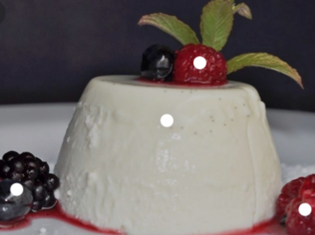

Pana Cotta Recepie

Panna cotta, a molded chilled dessert popular throughout Italy, is easy to make and can be prepared in advance. It looks and tastes wonderful with ripe red fruits such as raspberries, strawberries, or sweet cherries.
INGREDIENTS
Serves 8
- 1 envelope unflavored gelatin (about 1 tablespoon)
- 2 tablespoons cold water
- 2 cups heavy cream
- 1 cup half and half
- ⅓ cup sugar
- 1½ teaspoons vanilla extract
DIRECTIONS
- In a very small saucepan sprinkle gelatin over water and let stand about 1 minute to soften. Heat gelatin mixture over low heat until gelatin is dissolved and remove pan from heat.
- In a large saucepan bring cream, half and half, and sugar just to a boil over moderately high heat, stirring. Remove pan from heat and stir in gelatin mixture and vanilla. Divide cream mixture among eight ½-cup ramekins and cool to room temperature. Chill ramekins, covered, at least 4 hours or overnight.
- Dip ramekins, 1 at a time, into a bowl of hot water 3 seconds. Run a thin knife around edge of each ramekin and invert ramekin onto center of a small plate.
BON APETITE
Index